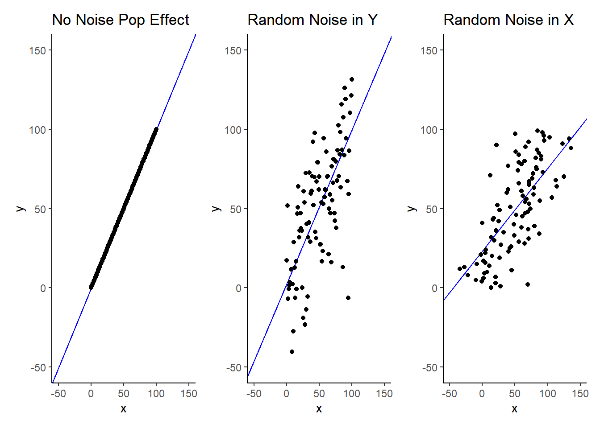
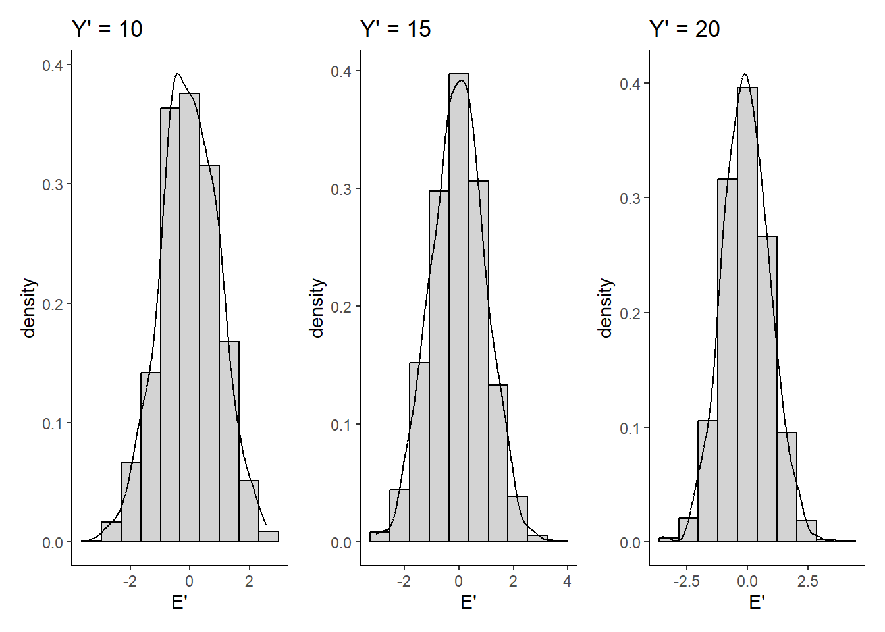
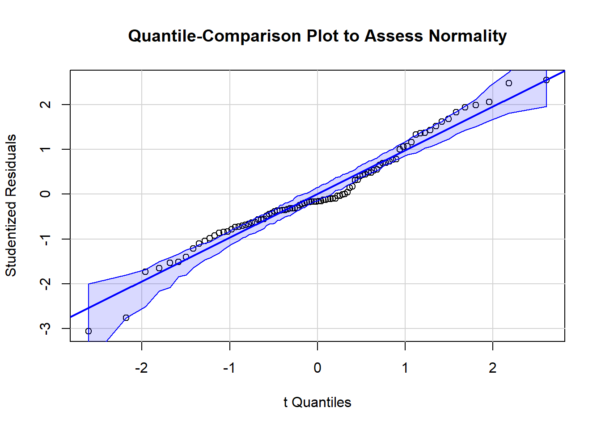
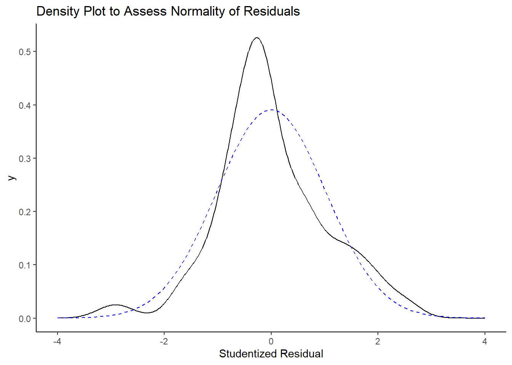
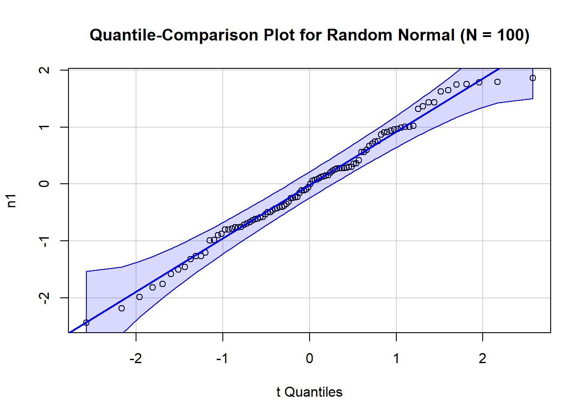
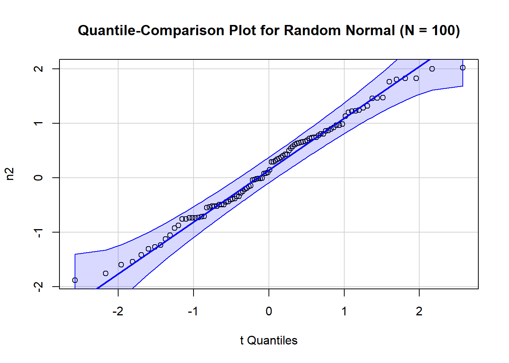
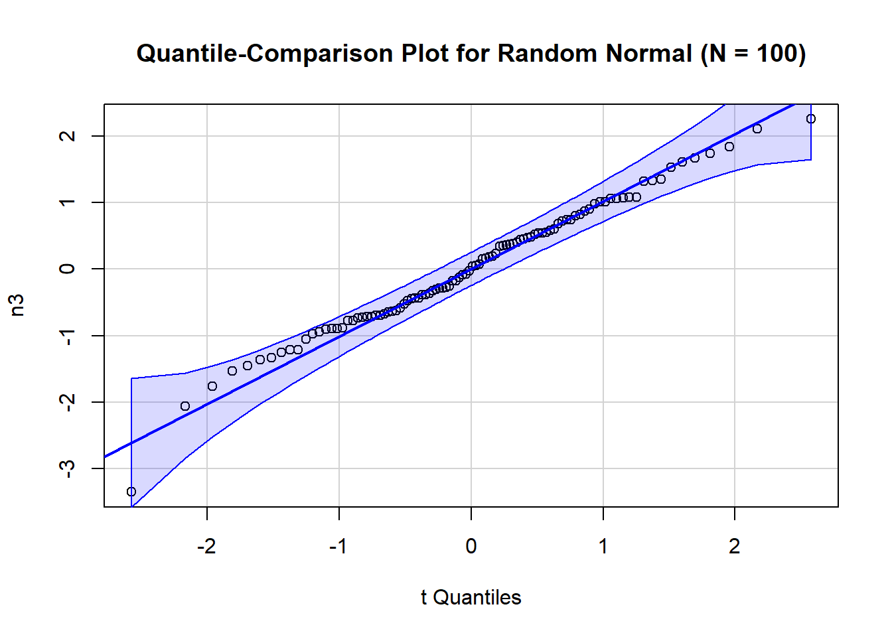
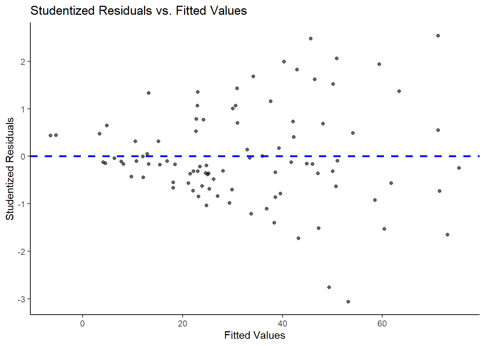
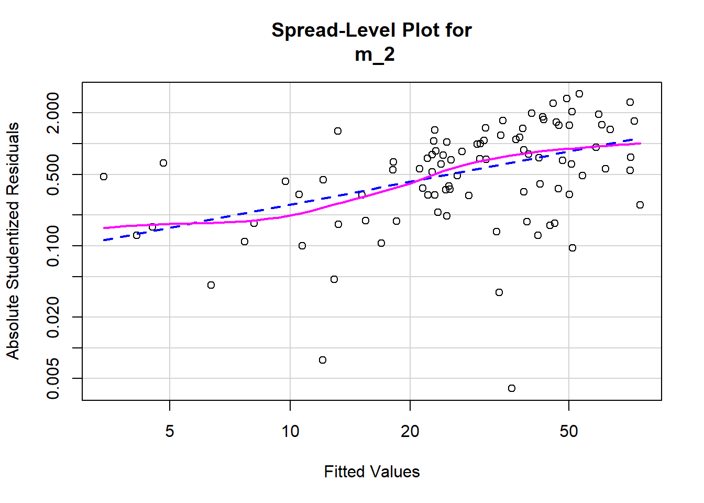
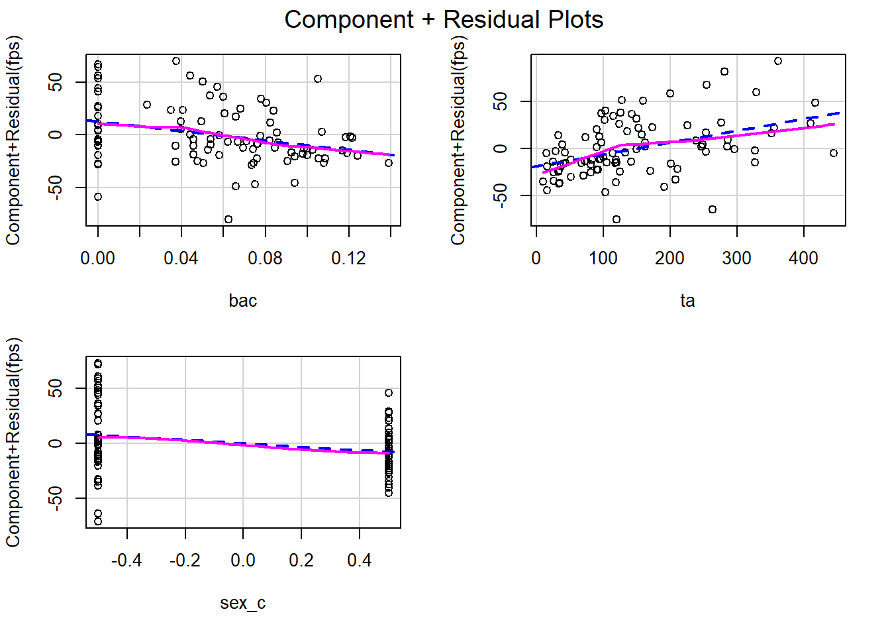

8 Dealing with Messy Data II: Model Assumptions
8.1 Goals of Unit
Understand 5 assumptions of GLMs.
Understand consequences of assumption violations.
- Inefficient standard errors (low power, type II errors).
- Inaccurate standard errors (incorrect statistical tests, type I errors).
- Inaccurate parameter estimates.
Learn how to detect violations (statistical tests and visual diagnosis).
Recognize the range of options available when violations are detected. Implementation of these options will be covered over the semester.
Examination of assumptions will further inform you about your data.
8.2 Assessment of Assumptions for Sig. Tests
All GLM procedures commonly make the 5 assumptions below. When these assumptions are met, OLS regression coefficients are MVUE (Minimum Variance Unbiased Estimators) and BLUE (Best Linear Unbiased Estimators). With the exception of \(\#1\), these assumptions are expressed (and assessed) with respect to the residuals around the prediction line.
- Exact X: The IVs are assumed to be known exactly (i.e., without measurement error).
- Independence: Residuals are independently distributed (prob. of obtaining a specific observation does not depend on other observations).
- Normality: All residual distributions are normally distributed.
- Constant variance: All residual distributions have a constant variance, \(\text{SEE}^2\).
- Linearity: All residual distributions (i.e., for each \(Y'\)) are assumed to have means equal to zero.
8.3 Exact X
Violations of the Exact X assumption lead to biased (i.e., inaccurate) estimates of regression coefficients.
Violations are caused by problems with reliability of measurement of your predictors.
Question: In simple, bivariate regression, how will reducing reliability affect the regression model?
It will reduce \(b_1\). We will underestimate the strength of relationship between \(X\) and \(Y\).
In multiple predictor models, the bias can be either positive or negative based on the nature of the correlations among the predictors. Use reliable variables!.
Question: What are the implications of unreliable \(X\) for the use of covariates to control variables?
Covariates only control from the construct they measure to the degree that they are reliable (and valid) measures of that construct.
Analysis that rely on unreliable covariates are not controlling the variance for the construct well.
8.4 Independence
Violations of the independence of residuals assumption can compromise the validity of our statistical tests (inaccurate standard errors).
Violations of residuals independence is a function of the research design caused by repeated measures on the same individual or related individuals/observations (participants in same family, school, etc).
Often difficult to detect in data but clear from research design.
Can be fixed by a variety of approaches including repeated measures analyses (later this semester) or multi-level, mixed effects, and/or hierarchical linear models (next semester).
8.5 Assessment of Residuals: General Issues
Remaining three assumptions (Normality distributed residuals with a mean of 0 and constant variance) can be assessed via examination of the residuals.
Use of Graphical Methods is emphasized.
Statistical tests of assumptions exist but should be used cautiously.
Assessment of assumptions about residuals is an inexact science: Conclusions are tentative.
The process of examining residuals will increase your understanding of your data. - May suggest transformations of your data. - May suggest alternative analytic strategies. - Will increase your confidence in your conclusions.
8.6 Residuals by \(\hat{Y}\): Normal M = 0, S = Constant
Code
norm_tbl <- tibble(`Y'` = rep(1:25, 1000),
`E'` = rnorm(25000, mean = 0, sd = 1))
norm_tbl |>
ggplot(aes(x = `Y'`,
y = `E'`)) +
geom_jitter(alpha = .4, width = .75, height = 0, size = .5) +
geom_hline(yintercept = 0, color = "blue", linewidth = 1) +
geom_vline(xintercept = 10, color = "red", linewidth = 1) +
geom_vline(xintercept = 15, color = "red", linewidth = 1) +
geom_vline(xintercept = 20, color = "red", linewidth = 1) +
scale_x_continuous(breaks = c(0, 5, 10, 15, 20, 25))
Code
hist_10 <- norm_tbl |>
filter(`Y'` == 10) |>
ggplot(aes(x = `E'`)) +
geom_histogram(aes(y = after_stat(density)), color = "black",
fill = "light grey", bins = 10) +
geom_density() +
labs(title = "Y' = 10")
hist_15 <- norm_tbl |>
filter(`Y'` == 15) |>
ggplot(aes(x = `E'`)) +
geom_histogram(aes(y = after_stat(density)), color = "black",
fill = "light grey", bins = 10) +
geom_density() +
labs(title = "Y' = 15")
hist_20 <- norm_tbl |>
filter(`Y'` == 20) |>
ggplot(aes(x = `E'`)) +
geom_histogram(aes(y = after_stat(density)), color = "black",
fill = "light grey", bins = 10) +
geom_density() +
labs(title = "Y' = 20")
hist_10 + hist_15 + hist_20
8.7 Normally Distributed Errors
The errors for each \(\hat{Y}\) are assumed to be normally distributed. Normally distributed errors are required for OLS regression coefficients to be MVUE but not BLUE.
Central limit theory indicates that even with non-normal errors, significance tests and confidence intervals are approximately correct with large \(N\).
Coefficients are still best unbiased efficient estimators among linear solutions (i.e., BLUE) but more efficient non-linear solutions may exist (e.g., Generalized Linear Models such as Poisson regression for thick tailed distributions).
Mean may not be best measure of center of a highly skewed distribution.
Multimodal error distributions suggest the omission of one or more categorical variables that divide the data into groups.
Transformations may correct shape of residuals (Unit 9).
8.8 Normality: Quantile Comparison & Density Plots
Code
library(tidyverse)
library(patchwork)
library(car) # needed for model_assumptions
library(psych) # needed for model_assumptions
library(gvlma) # needed for model_assumptions
theme_set(theme_classic())
data <- read_csv(here::here("data_lecture/7_three_predictors_fps.csv"),
show_col_types = FALSE) |>
mutate(sex_c = if_else(sex == "female", -.5, .5))We have a second function written by John called model_assumptions() that you can source to help test model assumptions.
Code
devtools::source_url("https://github.com/jjcurtin/lab_support/blob/main/model_assumptions.R?raw=true")Lets refit our last model from the previous section.
Code
data_rm_outliers <- data |>
filter(!subid %in% c("0125", "2112"))
m_2 <- lm(fps ~ bac + ta + sex_c, data = data_rm_outliers) Code
model_assumptions(m_2, Type = "normal", one.page = TRUE)

Descriptive Statistics for Studentized Residuals
Code
psych::describe(rstudent(m_2)) vars n mean sd median trimmed mad min max range skew kurtosis se
X1 1 94 0 1.02 -0.16 -0.02 0.83 -3.06 2.54 5.6 0.11 0.6 0.118.9 Normality: q-q Plot Examples



8.10 Constant Variance
The errors for each \(\hat{Y}\) are assumed have a constant variance (homoscedasticity). This is necessary for the OLS estimated coefficients to be BLUE.
If the errors are heteroscedastic, the coefficients remain unbiased but the efficiency (precision of estimation) is impaired and the coefficient SEs become inaccurate. The degree of the problem depends on severity of violation and sample size.
Rough rule is that estimation is seriously degraded if the ratio of largest to smallest variance is 10 or greater (or more conservatively, 4 or greater)
Transformations may fix this issue (next unit).
Weighted Least Squares provides an alternative to estimation when heteroscedasticity exists (maybe next semester?).
Corrections also exist for SEs when errors are heteroscedastic (more on this in a moment).
8.11 Constant Variance: Residual and Spread-Level Plots
Code
model_assumptions(m_2, Type = "constant")
A spread level plot is a plot of the log(abs(studentized residuals) vs. log(fitted values). \(1-b\) (from the regression line below) is the suggested power transformation for \(Y\) to stabilize variance.

Suggested power transformation: 0.2555876 8.12 Constant Variance: Statistical Test
Breusch & Pagan (1979)1 and Cook & Weisberg (1983)2 independently developed test for constant variance.
ncvTest() in car package. Also provided by model_assumptions() as well.
Do not use it blindly. All statistical tests are designed to be sensitive to specific types of violations. May miss other types of violations.May also provide false positive due to other aspects of the distribution.
Code
car::ncvTest(m_2)Non-constant Variance Score Test
Variance formula: ~ fitted.values
Chisquare = 21.89294, Df = 1, p = 0.00000288298.13 Constant Variance: Correcting SEs
Standard errors are inaccurate when variance of residuals is not constant. A procedure to provide White (1980)3 corrected SEs is described in Fox (2008), chapter 12, pp 275-276.
Uncorrected Tests of Coefficients
Code
broom::tidy(m_2)# A tibble: 4 × 5
term estimate std.error statistic p.value
<chr> <dbl> <dbl> <dbl> <dbl>
1 (Intercept) 26.6 6.44 4.13 0.0000825
2 bac -229. 72.4 -3.16 0.00214
3 ta 0.126 0.0273 4.61 0.0000135
4 sex_c -15.5 5.70 -2.72 0.00790 White (1980) Heteroscedasticity-corrected SEs and Tests
Code
corrected_ses <- sqrt(diag(hccm(m_2)))
broom::tidy(m_2) |>
select(term, estimate) |>
add_column(std.error = corrected_ses) |>
mutate(statistic = estimate/std.error,
p.value = 2*(pt(abs(statistic), df=m_2$df.residual, lower.tail=FALSE)))# A tibble: 4 × 5
term estimate std.error statistic p.value
<chr> <dbl> <dbl> <dbl> <dbl>
1 (Intercept) 26.6 6.90 3.85 0.000220
2 bac -229. 72.1 -3.18 0.00204
3 ta 0.126 0.0304 4.13 0.0000799
4 sex_c -15.5 5.70 -2.72 0.00791 8.14 Linearity: Component + Residuals Plots
If Linearity assumption is not met, coefficients are biased.
Plot partial residual (\(e_{i(j)} = e_i + b_jX_{ij}\)) by each predictor.
Can include factors but can not include interactions with factors. Code regressors manually.
Code
model_assumptions(m_2, Type='linear')
8.15 Global Test of Model Assumptions
Pena and Slate (2006) validated a global test of linear model assumptions.4
Provided by model_assumptions() using gvlma package
Code
gvlma(m_2)
Call:
lm(formula = fps ~ bac + ta + sex_c, data = data_rm_outliers)
Coefficients:
(Intercept) bac ta sex_c
26.5528 -228.8721 0.1256 -15.4874
ASSESSMENT OF THE LINEAR MODEL ASSUMPTIONS
USING THE GLOBAL TEST ON 4 DEGREES-OF-FREEDOM:
Level of Significance = 0.05
Call:
gvlma(x = m_2)
Value p-value Decision
Global Stat 9.8263 0.043458 Assumptions NOT satisfied!
Skewness 0.2921 0.588886 Assumptions acceptable.
Kurtosis 1.0393 0.307987 Assumptions acceptable.
Link Function 0.1898 0.663091 Assumptions acceptable.
Heteroscedasticity 8.3051 0.003953 Assumptions NOT satisfied!8.16 Transformations: The Family of Powers & Roots
Power transformations (next unit) are very useful for correcting problems with normality, constant, variance, and linearity of errors.
Polynomial regression (PSY 710) is useful when you have quadratic, cubic, etc. effects of \(X\)s on \(Y\).
Generalized linear models (e.g., Logistic regression; PSY 710) are also available.
8.17 Summary of Violation Consequences and Solutions
Exact X
- Inaccurate (biased) parameter estimates.
- Use reliable measures of \(X\)s, use SEM with latent variables.
Independence
- Inaccurate standard errors.
- Use repeated measures, use multi-level models.
Normally distributed errors
- Inefficient standard errors.
- Consider omitted variables, use transformations, use generalized linear models.
Constant variance for errors
- Inaccurate and inefficient standard errors.
- Use SE corrections (but still inefficient), use transformations, use weighted least squares.
Linearity (Error distributions all have mean of 0)
- Inaccurate (biased) parameter estimates.
- Use transformations, use polynomial regression, use generalized linear models.
Breusch,T. S. and Pagan,A. R. (1979) A simple test for heteroscedasticity and random coefficient variation. Econometrica, 47, 1287-1294.↩︎
Cook,R. D. and Weisberg,S. (1983) Diagnostics for heteroscedasticity in regression. Biometrika, 70, 1-10.↩︎
Long,J.S. and Ervin,L.H. (2000) Using heteroscedasity consistent standard errors in the linear regression model. The American Statistician 54, 217–224.;cWhite,H. (1980) A heterskedastic consistent covariance matrix estimator and a direct test of heteroskedasticity. Econometrica 48, 817–838.↩︎
Pena,E.A. and Slate,E.H. (2006). Global validation of linear model assumptions, Journal of the American Statistical Association, 101, 341-354.↩︎